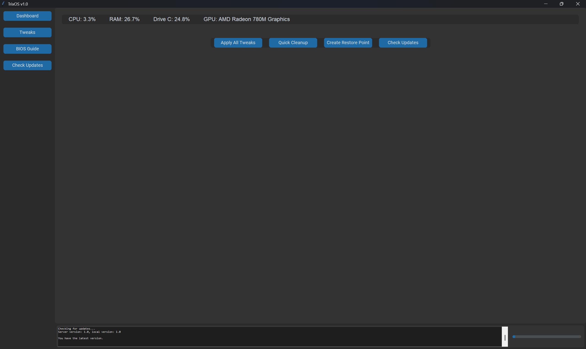
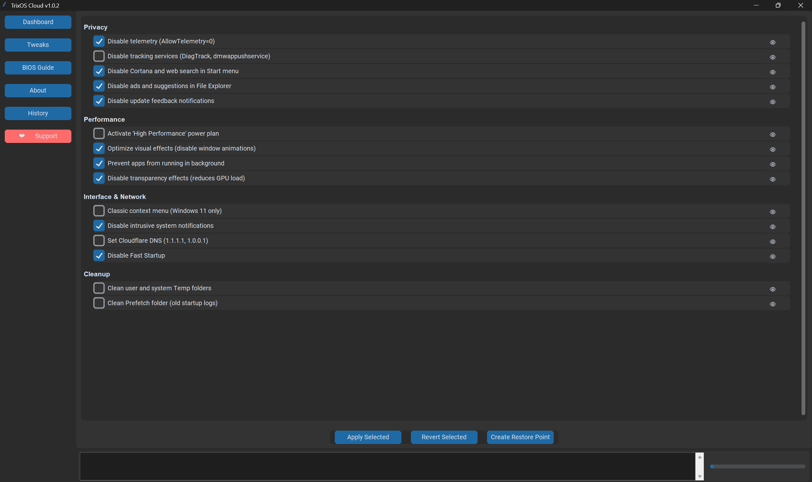
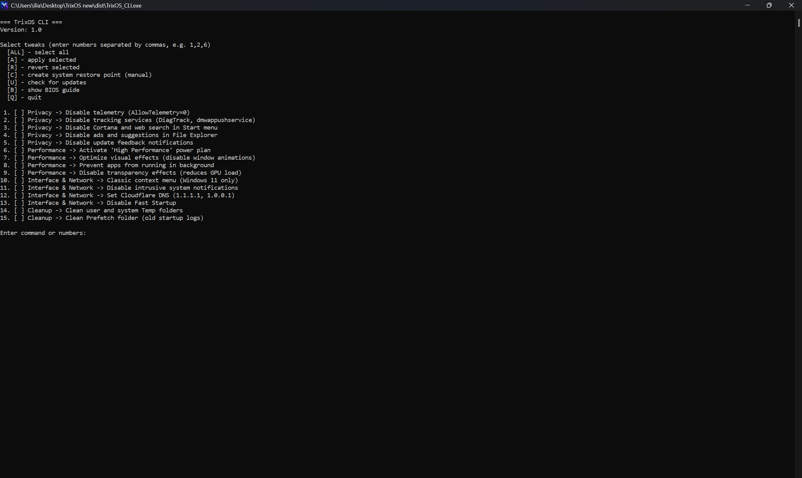

TrixOS — Windows Optimization Tool for Windows 10/11
One‑click system tweaks to boost performance, disable telemetry, remove bloatware, and take full control of your Windows experience.
📸 Screenshots
See TrixOS in action — simple, clean, and powerful.

Main Dashboard

All Tweaks

Command Line Interface
⚡ What TrixOS Can Do
Privacy & Security
Disable Windows Telemetry, Data Collection, and optional Defender.
Performance Boost
Speed up boot, shutdown, network, and SSD/HDD performance.
Bloatware Removal
Remove pre‑installed junk apps, disable Cortana and Xbox features.
System Tweaks
Disable animations, Edge startup boost, and stop forced updates.
Is it safe?
Yes. TrixOS automatically creates a System Restore Point before applying any changes. If something goes wrong, simply restore your system to the previous state.
❤️ Support the Project
If TrixOS helped you, consider supporting further development.
Support via DonationAlertsJoin the Team
Help us improve TrixOS — we're looking for moderators, testers, and more.
Apply for Moderation✉️ Or email us at trixos7821@gmail.com
Core Team
Built and maintained by a single developer — but the community makes it better.
Want to join the team? Apply here.